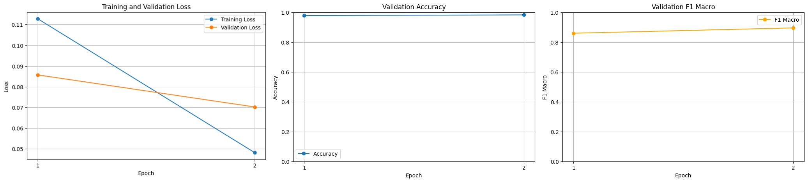

Abstract
Online job scams pose significant risks to newgrad job seekers, making automated detection crucial for protecting
vulnerable users. We fine-tune LUKE, a language model with entity-aware self-attention, on the Real or Fake Job Posting
Prediction dataset to classify fraudulent job postings. Our approach combines job titles, company profiles, descriptions,
requirements, and benefits into a unified text representation. After two epochs of fine-tuning on 12,873 training examples,
our model achieves 98.3% accuracy and 0.895 macro F1-score on the validation set, and 98.8% accuracy with 0.927 macro
F1-score on the test set. We are currently developing span-level fraud detection capabilities to identify specific
fraudulent elements within postings, implementing counterfactual token fairness analysis to ensure the model doesn't
discriminate based on sensitive attributes like location or visa requirements, and building a Chrome extension to provide
real-time fraud detection for job seekers browsing online job boards.
Teaser Figure
A figure that conveys the main idea behind the project or the main application being addressed. This figure is from StyLEx.

Any subsection
If you need to explain more about your figure
Introduction / Background / Motivation
What did you try to do? What problem did you try to solve? Articulate your objectives using absolutely no jargon.
We aim to automatically detect fraudulent job postings to protect job seekers from online scams. Fake job postings can lead
to identity theft, financial loss, and wasted time for vulnerable individuals seeking employment. Our goal is to build a
classifier that can distinguish legitimate job postings from fraudulent ones based on textual content, and to make this
technology accessible through a practical browser extension that job seekers can use in real-time.
How is it done today, and what are the limits of current practice?
Current approaches typically rely on manual review or simple rule-based systems that check for specific keywords or
patterns. However, these methods are time-consuming, don't scale well, and can be easily circumvented by sophisticated
scammers. Recent deep learning approaches show promise but often treat job postings as simple text without considering
the structured nature of the information (title, company profile, requirements, etc.). Additionally, existing solutions
lack interpretability - they don't explain which specific parts of a posting are suspicious, making it difficult for users to
understand why a posting was flagged.
Who cares? If you are successful, what difference will it make?
Job seekers, particularly those in vulnerable populations, would benefit from automated fraud detection systems that can
flag suspicious postings in real-time. Job platforms and recruitment websites could integrate such systems to improve user
trust and safety. Successfully detecting fraudulent postings can prevent financial losses, protect personal information,
and save job seekers significant time and emotional distress. By providing both detection and explanation through
span-level analysis, users can make more informed decisions about which opportunities to pursue.
Approach
What did you do exactly? How did you solve the problem? Why did you think it would be successful? Is anything new in your approach?
We fine-tuned LUKE (Language Understanding with Knowledge-based Embeddings), a pre-trained transformer model with
entity-aware self-attention mechanisms. We combined five key textual fields from job postings (title, company profile,
description, requirements, and benefits) into a single text representation. We used the Real or Fake Job Posting Prediction
dataset from Kaggle, which contains 17,880 job postings with approximately 4.8% fraudulent examples. The dataset was split
80-10-10 into training, validation, and test sets with stratified sampling to maintain class balance.
We are currently researching and beginning to implement three key extensions to our base classifier:
- Span-level fraud detection: Rather than just classifying entire postings, we are developing methods to identify
specific spans of text that contribute most to fraud predictions. This will provide interpretable explanations to users
about which parts of a job posting are suspicious.
- Counterfactual fairness analysis: We are implementing counterfactual token fairness to ensure our model doesn't
discriminate based on sensitive contextual attributes such as location, visa requirements, or remote work status.
By creating counterfactual variants (e.g., changing location or visa terms) and analyzing how they affect predictions,
we will measure fairness by comparing true and false positive rates across these attributes.
- Chrome extension deployment: We are building a browser extension that will integrate our fraud detection model to
provide real-time warnings as users browse job posting websites, making the technology directly accessible to job
seekers.
What problems did you anticipate? What problems did you encounter? Did the very first thing you tried work?
We anticipated class imbalance issues given that only 4.8% of postings are fraudulent. To address this, we used stratified
sampling and tracked both accuracy and macro F1-score to ensure the model doesn't simply predict all examples as
legitimate. We also set a maximum sequence length of 256 tokens to handle long job descriptions while maintaining
computational efficiency. The initial baseline model (before fine-tuning) showed only 4.8% accuracy, essentially
predicting the majority class, which confirmed the need for proper training.
For our ongoing work, we are exploring how to extract attention weights and gradient-based saliency maps from LUKE to
identify the most informative spans for fraud detection. For the Chrome extension, we are investigating efficient model
deployment strategies, including potential model distillation or API-based inference to balance accuracy with response time.
Results
How did you measure success? What experiments were used? What were the results, both quantitative and qualitative? Did you succeed? Did you fail? Why?
We evaluated our model using accuracy and macro F1-score on both validation and test sets. We established a baseline
using the pre-trained LUKE model without fine-tuning, which achieved only 4.8% accuracy (equivalent to always predicting
"not fraudulent"). After fine-tuning for 2 epochs with a learning rate of 2e-5 and batch size of 32, our model achieved:
- Validation Set: 98.3% accuracy, 0.895 macro F1-score
- Test Set: 98.8% accuracy, 0.927 macro F1-score
The model showed consistent improvement during training, with validation loss decreasing from 0.086 to 0.070 and training
loss from 0.113 to 0.048 over 2 epochs. The significant improvement over the baseline and strong performance on both
validation and test sets indicate successful learning of patterns that distinguish fraudulent from legitimate job postings.
| Epoch |
Training Loss |
Validation Loss |
Accuracy |
F1 Macro |
| 1 |
0.112800 |
0.085683 |
0.978337 |
0.859575 |
| 2 |
0.048100 |
0.070186 |
0.982530 |
0.895433 |
Table 1. Training progress showing loss, accuracy, and F1 macro scores per epoch.

Conclusion and Future Work
We are actively developing span-level fraud detection capabilities to provide interpretable explanations for our
predictions. Preliminary research indicates that attention mechanisms in LUKE can be leveraged to highlight suspicious
phrases, though we are still experimenting with the best approach for extracting and visualizing these insights.
A key focus of our ongoing work is ensuring fairness in fraud detection. We are implementing counterfactual fairness
analysis to identify whether sensitive attributes like location, visa requirements, or remote work status unfairly
influence our model's predictions. By generating counterfactual variants of job postings and measuring changes in
classification outcomes, we aim to detect and mitigate potential biases. This work will help ensure that legitimate
job postings aren't flagged as fraudulent simply due to attributes like requiring visa sponsorship or being in certain
geographic locations.
Additionally, we are in the early stages of developing a Chrome extension that will integrate our trained model to
provide real-time fraud detection as users browse job posting sites. This extension will display both the fraud
classification and the span-level explanations, allowing users to understand why a posting was flagged. This will make
our research directly applicable to real-world job seekers who need immediate protection while searching for
opportunities online.